Shift Forks and Mainshaft Installation
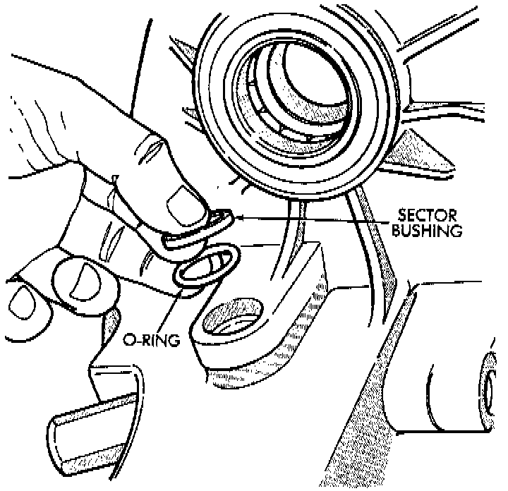
1. Install new sector shaft O-ring and bushing.
2. Install shift sector.
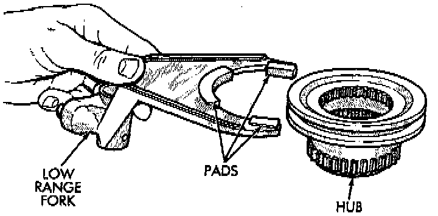
3. Install new pads on low range fork, if necessary.
4. Assemble low range fork and hub.
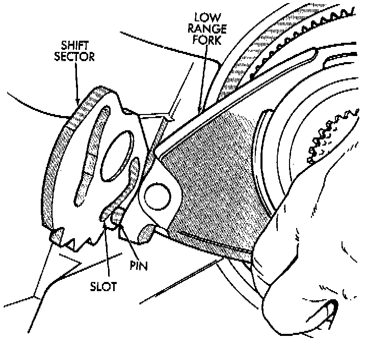
5. Position low range fork and hub in case. Be sure low range fork pin is engaged in shift sector slot.
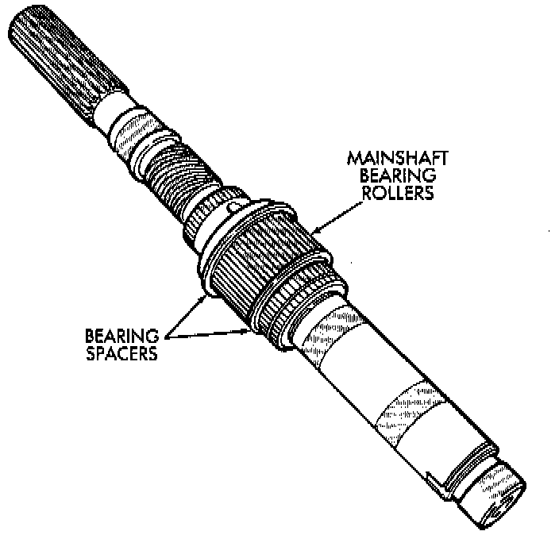
6. Install first mainshaft bearing spacer on main.
7. Install bearing rollers on mainshaft. Coat bearing rollers with generous quantity of petroleum jelly to hold them in place.
8. Install remaining bearing spacer on mainshaft. Do not displace any bearings while installing spacer.
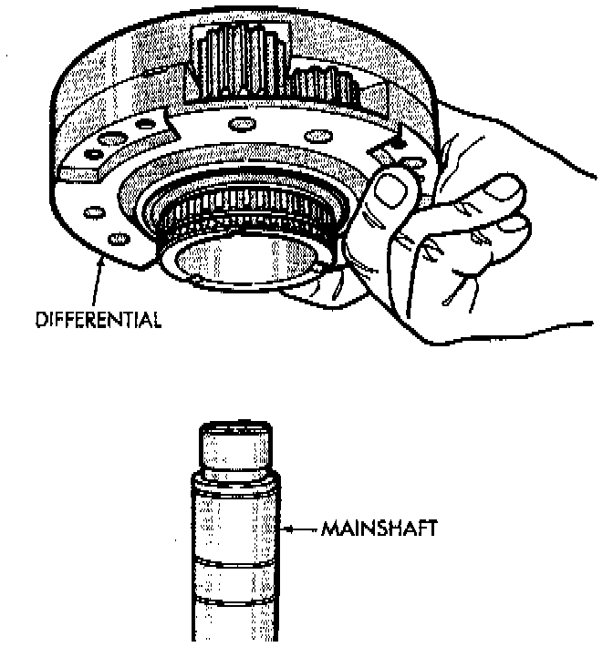
9. Install differential. Do not displace mainshaft bearings when installing differential.
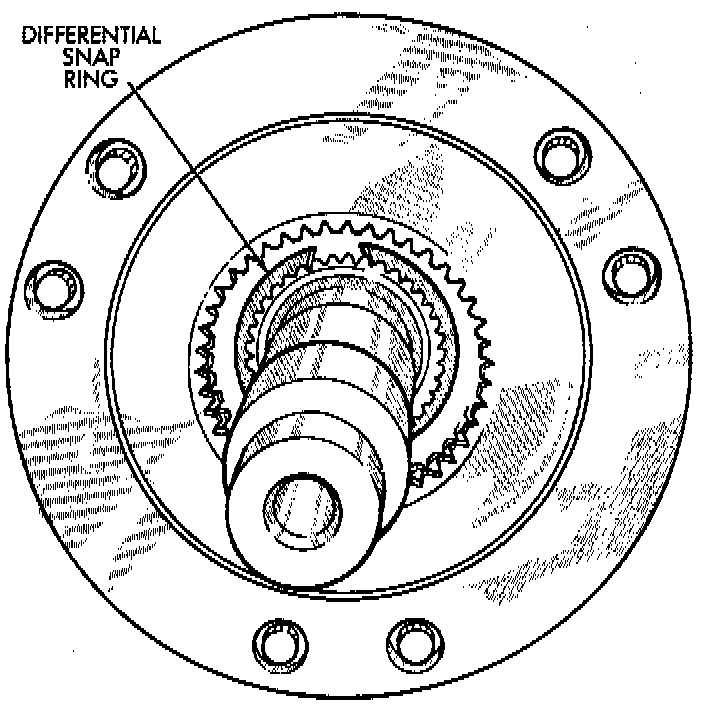
10. Install differential snap-ring.
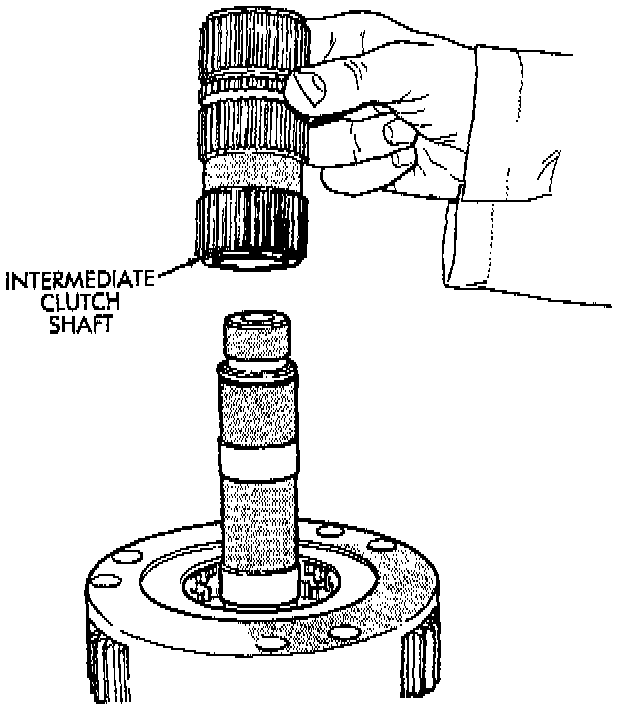
11. Install intermediate clutch shaft.
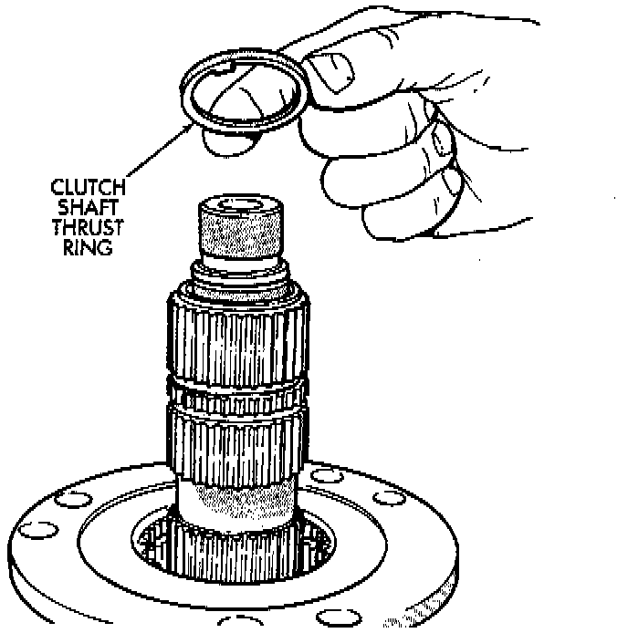
12. Install clutch shaft thrust washer.
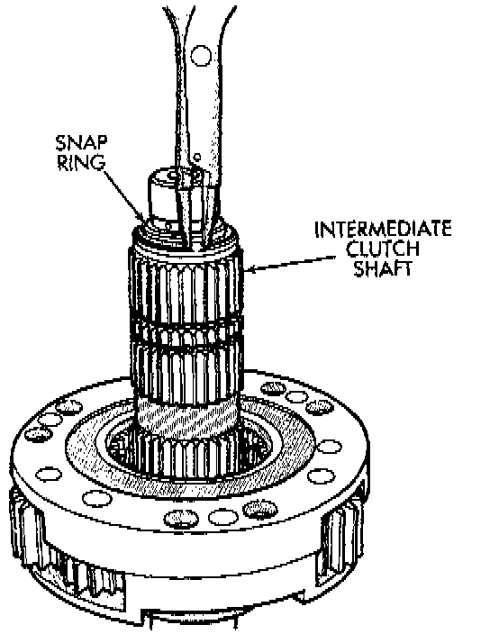
13. Install clutch shaft snap-ring.
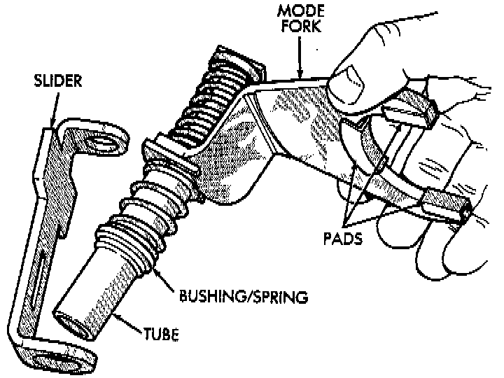
14. Inspect mode fork assembly. Replace pads and bushing if necessary. Replace fork tube if bushings inside tube are worn or damaged. Also check springs and slider bracket. Replace worn, damaged components
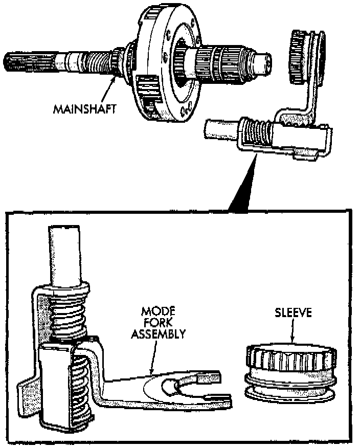
15. Install mode sleeve in mode fork. Then install assembled sleeve and fork on mainshaft. Be sure mode sleeve splines are engaged in differential splines.
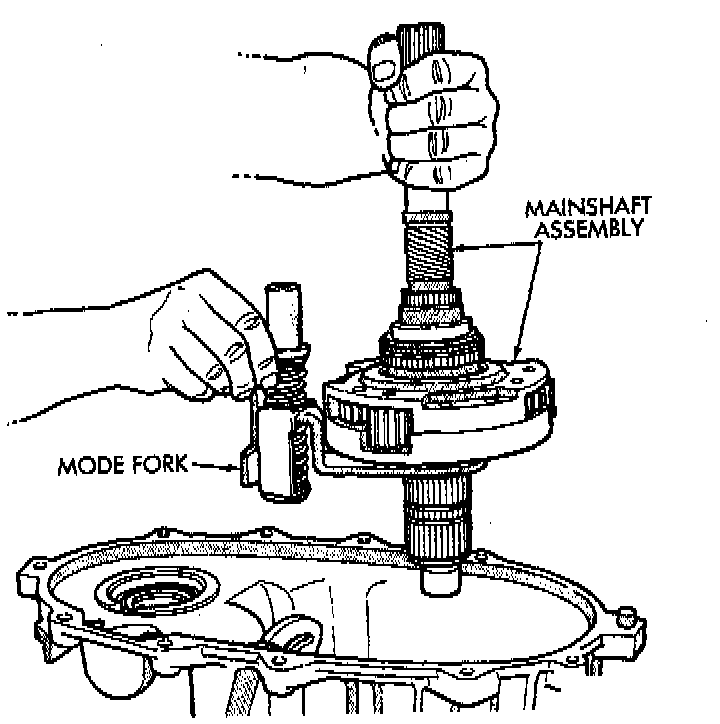
16. Install mode fork and mainshaft assembly in case. Rotate mainshaft slightly to engage shaft with low range gears.
17. Rotate mode fork pin into shift sector slot.
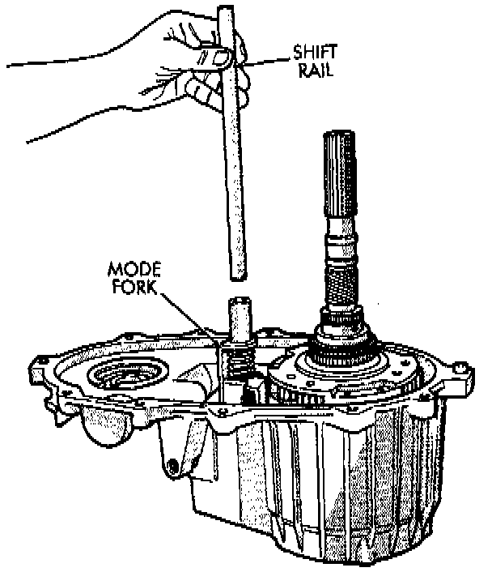
18. Install shift rail. Be sure rail is seated in both shift forks.
19. Rotate shift sector to align lockpin hole in low range fork with access hole in case.
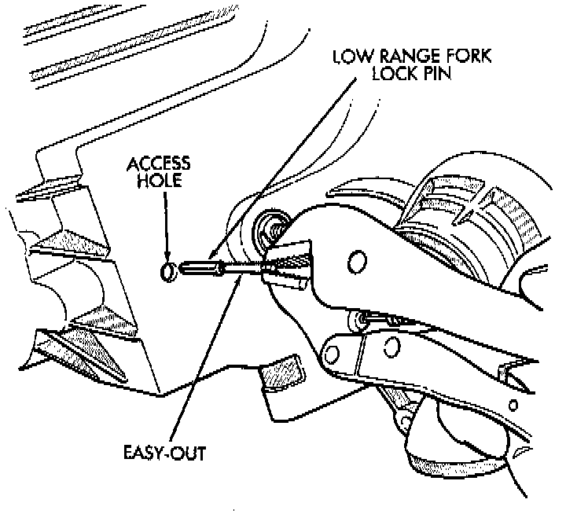
20. Insert an easy-out in range fork lockpin to hold it securely for installation. Lockpin is slightly tapered on one end. Insert tapered end into fork and rail.
21. Insert lockpin through access hole and into shift fork. Then remove easy-out and seat the pin with pin punch.
22. Install plug in lockpin access hole.
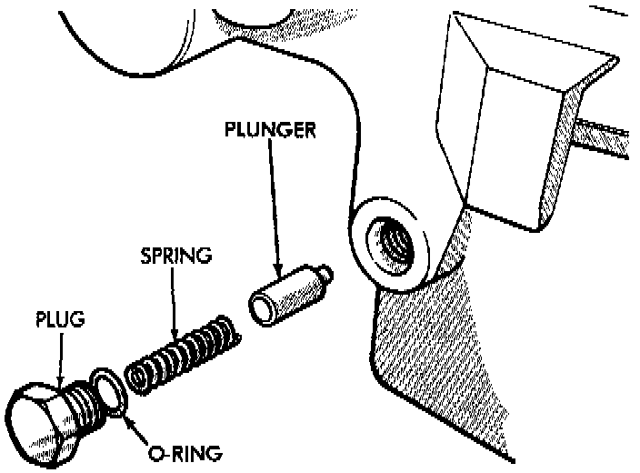
23. Install detent plunger, detent spring and detent plug in case.